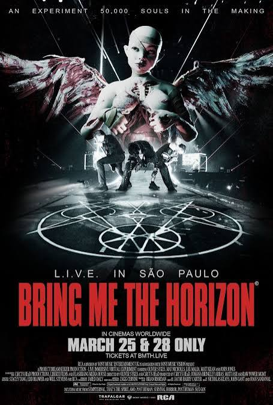
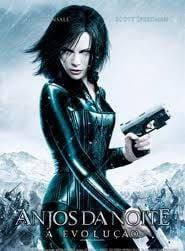
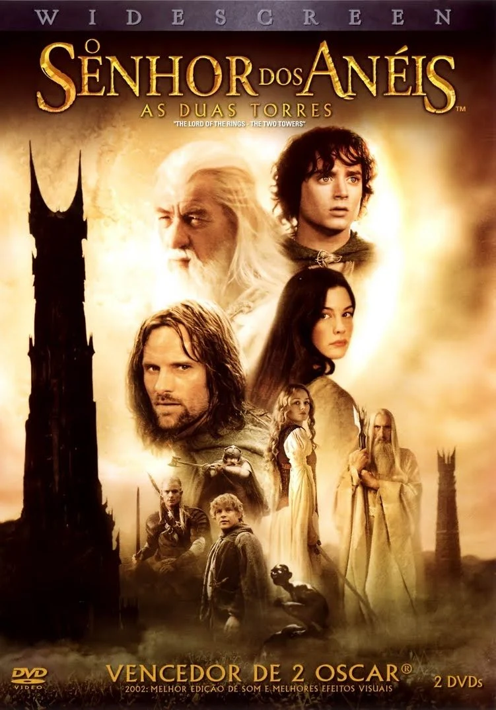
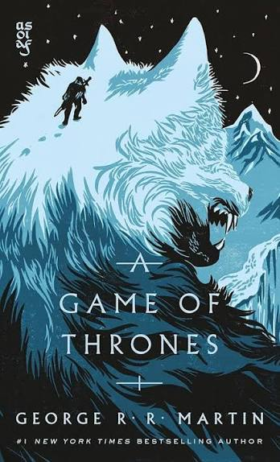
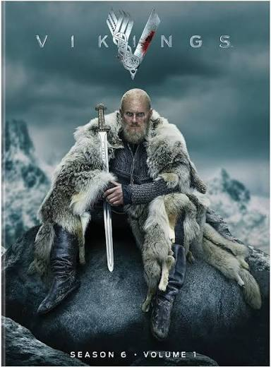
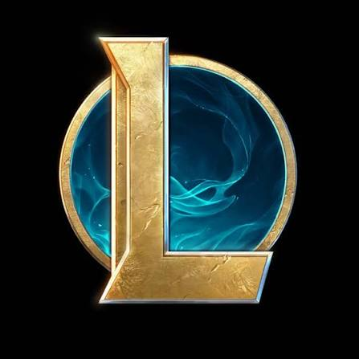

Músicas

Eu gosto muito de Deathcore, Bmth é uma banda que representa bem o gênero, além disso posso dizer que amo o rock em geral e música eletrônica.
Filmes



Os filmes representam o gênero da fantasia que é um dos que mais gosto. Os filmes apresentados são: Harry Potter; Senhor dos Anéis e Anjos da Noite.
Séries


Séries são Game Of Thrones e Vikings, resumindo briga de espada é daora.
Jogos

League of Legends, meu câncer jogo desde os 14 anos, hoje é raro mas não parei.
Hobbies
Gosto de viajar, acampar, ir em festivais de música, comic-cons, tenho interesse em ir eventos tecnológicos.
Objetivos Profissionais
Meu desejo é realizar a transição de carreira. Hoje trabalho na roça, tenho uma horta, meu desejo é melhorar de vida mesmo, eu sempre gostei da área, mas nunca tive a coragem, pois ela veio e estou gostando.